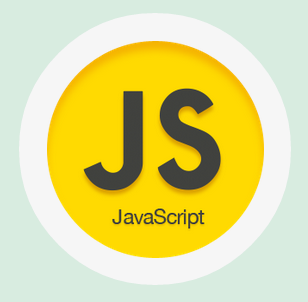

Все началось в 90-е
События, в результате которых появился JavaScript, разворачивались в течение шести месяцев, с мая по декабрь 1995 года. Компания Netscape Communications уверенно прокладывала себе путь в области веб-технологий. Её браузер Netscape Communicator успешно отвоевывал позиции у NCSA Mosaic, первого популярного веб-браузера. Netscape была создана людьми, принимавшими участие в разработке Mosaic в ранние 90-е. Теперь, с деньгами и независимостью, у них было всё необходимое для поиска способов дальнейшего развития веб-технологий. Именно это послужило толчком для рождения JavaScript. Основатель Netscape Communications и бывший участник команды Mosaic Марк Андриссен считал, что веб должен стать более динамичным. Анимации, взаимодействие с пользователями и другие виды интерактивности должны стать неотъемлемой частью интернета будущего. Веб нуждался в лёгком скриптовом языке (или языке сценариев — прим.ред.) , способном работать с DOM, который в те дни не был стандартизирован. Существовало одно «но», являвшееся на тот момент серьёзным вызовом: этот язык не должен был предназначаться для крупных разработчиков и прочих людей, имевших отношение к инженерной стороне вопроса. Java в те дни уже активно развивалась и твёрдо заняла эту нишу. Таким образом, новый скриптовый язык должен был предназначаться для совершенно иной аудитории — дизайнеров. Очевидно, что веб был статичным, а HTML был достаточно молод и прост в освоении даже для тех, кто не имел ничего общего с программированием. Следовательно, всё, что должно было стать частью браузера и сделать веб более динамичным, должно быть максимально понятным для далёких от программирования людей. Из этого предположения родилась идея Mocha, который должен был стать тем самым простым, динамичным и доступным скриптовым языком. И тут в нашей истории появляется Брендан Айк, отец JavaScript. Айк должен был разработать для Netscape «Scheme для браузера». Scheme — это динамичный, мощный и функциональный диалект языка программирования Lisp с максимально упрощённым синтаксисом. Вебу требовалось что-то подобное: простое в освоении, динамичное, немногословное и мощное. Айк не стал упускать шанса поработать над тем, что ему нравилось, и присоединился к команде. Перед командой была поставлена задача подготовить работающий прототип в кратчайшие сроки. Sun Microsystems заканчивала работу над своим языком программирования Java, на тот момент называвшимся Oak, и Netscape Communications была уже готова заключить с компанией контракт, чтобы сделать Java доступным в своем браузере. Так зачем же понадобился Mocha (первое название JavaScript)? Зачем нужно было создавать абсолютно новый язык программирования при наличии готовой альтернативы? Дело в том, что Java не был предназначен для той аудитории, на которую ориентировался Mocha — скриптеры, любители, дизайнеры. Java был слишком большим и навороченным для того, чтобы выполнять эту роль. Основная идея заключалась в том, что Java должен был предназначаться для крупных разработчиков и профессиональных программистов, в то время, как Mocha должен был использоваться для небольших скриптовых задач. Другими словами, Mocha должен был стать скриптовым компаньоном для Java по принципу, аналогичному тому, как взаимодействуют C/C++ и Visual Basic на платформе Windows.